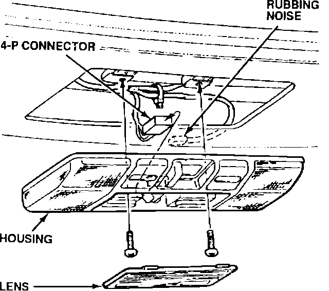
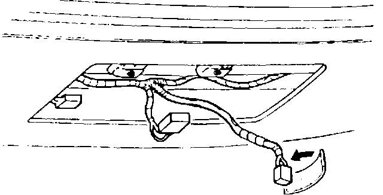

Rubbing Noise From Ceiling
CEILINGSymptom:
Rubbing noise heard from the forward ceiling light.
Probable Cause:
The 2-pin connector on the cellular phone microphone rubs against the headliner.
Corrective Action:
Wrap the connector with EPI

1. Remove the front ceiling light. See section 20 of the service manual.

2. Wrap the 2-pin microphone connector with 3 mm thick EPT Sealer cut to 30 x 50 mm.
3. Reinstall the ceiling light
WARRANTY INFORMATION:
Operation number: 715220
Flat rate time: 0.2 hours
Failed P/N: 34250-SP0-013ZC
Defect code: 042
Contention code: B07